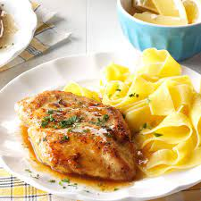

Quick Chicken Piccata

Quick and easy pan-fried chicken breasts topped with a smiple pan sauce.
These pan-friend chicken breasts will be the most delcious, tender and juicy piece of chicken you will ever put in your mouth
in just 25 minutes this dish will be complete and ready to serve.
Ingredients
- 4 skinless, boneless chicken breast halves
- cayenne pepper to taste
- salt and ground black pepper to taste
- all-purpose flour for dredging
- 2 tablespoon olive oil
- 1 tablespoon capers, drained
- 1/2 cup white wine
- 1/4 cup water
- 3 tablespoons cold unsalted butter, in 1/4 inch slices
- 2 tablespoons fresh italian parsely, chopped
Steps
- Place chicken breats between 2 layers of plastic wrap and pound to 1/2 inch thick.
- Season both sides with cayanne, salt and black pepper. dredge lightly in flour and shake off excess.
- Heat olive oil in skiller over medium-high heat.
- Cook capers in reserve oil, smashing them lightly to release brine.
- Pour white wine into skillet. Scrape any browned bits from the bottom of the pan.
- Stil lemon juice, water, butter into the recuded wine mixture until thick.
- Return chikcn breasts to pan, cook until heated through.